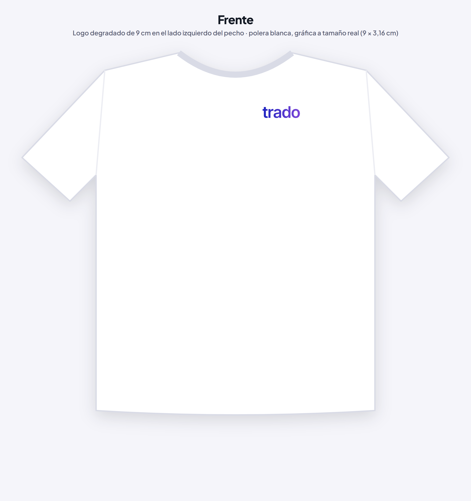
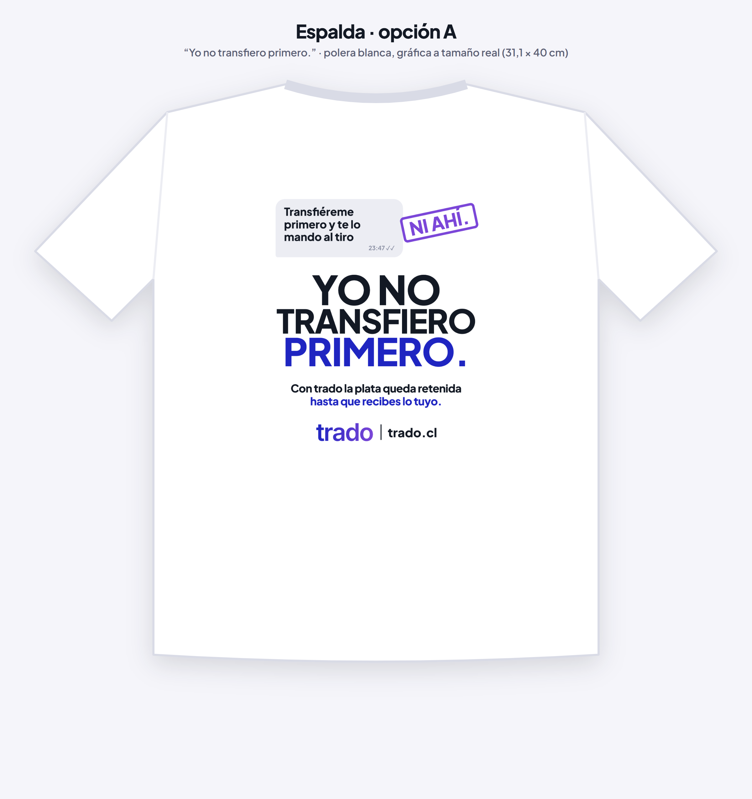
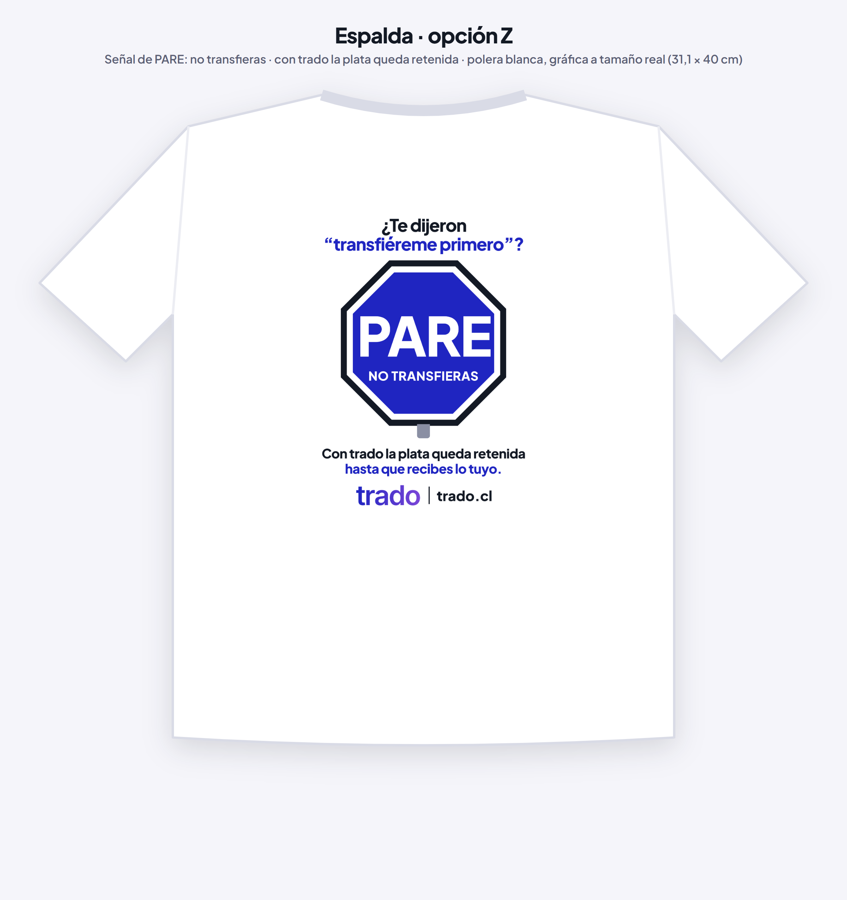

/trado%20degradado.svg) EtMday 2026 · poleras del stand
EtMday 2026 · poleras del stand
EtMday 2026 · poleras del stand
EtMday 2026 · poleras del stand
Las dos llevan el mismo logo adelante y una gráfica distinta atrás. Todos los archivos vienen a tamaño real y con fondo transparente.



| Pieza | Medida | Ubicación | Archivo |
|---|---|---|---|
| Frente las 2 poleras | 9 × 3,16 cm | Pecho izquierdo de quien la usa. Borde de arriba ~8 cm bajo la costura del hombro. | 1-frente-logo-9x3,16cm.pdf |
| Espalda polera 1 “Yo no transfiero primero” | 31,1 × 40 cm | Centrada a lo ancho. Borde de arriba a 8 cm bajo la costura del cuello. | 2-polera1-espalda-31,1x40cm.pdf |
| Espalda polera 2 Señal de PARE | 31,1 × 40 cm | Centrada a lo ancho. Borde de arriba a 8 cm bajo la costura del cuello. | 3-polera2-espalda-31,1x40cm.pdf |